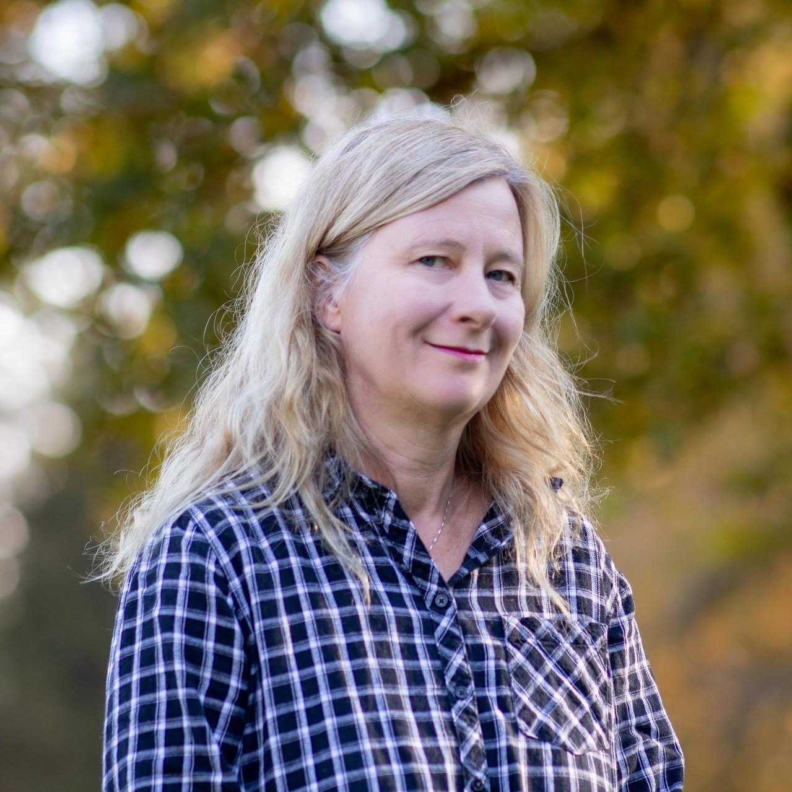

2024–2026
Association Information Climat
Information sur les risques de catastrophes climatiques, l’adaptation et la résilience. www.informationclimat.ch
Dorota Retelska · Docteure ès sciences
Comprendre le Vivant.
Eclairer les enjeux du climat.
Bioinformaticienne et analyste climatique, je communique les événements et les prévisions climatiques.

Docteure ès sciences de l’Université de Lausanne, j’ai construit mon parcours entre biologie, bioinformatique et climat. Mes expériences de recherche en Suisse et à Copenhague se prolongent dans les conférences et la communication scientifique. J’aime rendre les connaissances accessibles et donner des repères pour comprendre les enjeux environnementaux.
2024–2026
Information sur les risques de catastrophes climatiques, l’adaptation et la résilience. www.informationclimat.ch
2024–2025
Collaboratrice scientifique à l’EPFL : recherche sur des aléas de pluie extrême en Suisse
2025
Enseignement des risques climatiques dans le CAS en Management du risque UNIL/EPFL
2023–2025
Coordination locale et engagement pour l’action climatique
2024–2025
Animation et coordination du groupe politique
2015–2024
Conférences sur le climat, blog d’experte sur le site du Temps (2018–2023), puis sur www.global-climat.com. Les archives du blog du Temps sont disponibles sur dorotaretelska.wordpress.com. Relecture du rapport du GIEC et communication scientifique au FiBL (2020–2021)
2004–2013
Postdoctorats à l’ISREC/Ludwig et à l’Université de Copenhague, puis recherche et missions de conseil à l’Institut suisse de bioinformatique. Analyse de génomes, régulation des gènes et annotation de données d’épigénétique
Analyse de données et statistiques, Python, IA, Perl et R, biologie moléculaire, rédaction de publications, présentations scientifiques, réseaux sociaux et coordination d’événements
Doctorat ès sciences, UNIL (1997–2001). Mastère en bioinformatique, UNIL–UNIGE (2002–2003). Licence et diplôme en biologie, UNIL (1991–1997)
Modèles climatiques, environnement et politiques énergétique et climatique (2015). Gestion de groupe (2013 et 2017), gestion de projet et visualisation des idées (2024)
Français, langue maternelle ; polonais et anglais, niveau C1 ; allemand. En dehors des sciences : littérature, théâtre, yoga et nature
Climat · Manuscrit
D. Retelska & M. Meyer · Indiqué comme soumis à PLOS Climate dans le CV 2025
Climat · 2018
Scientists for Peace, Communità de Ethica Vivente
Livre · 2016
Livre Kindle
Climat · 2015
D. Retelska · Bulletin de la Société Adrastia, 12 novembre 2015
Bioinformatique · 2008
Marstrand TT, Frellsen J, Moltke I, Thiim M, Valen E, Retelska D, Krogh A · PLOS ONE, 3(2):e1623
Génomique · 2007
Retelska D, Beaudoing E, Notredame C, Jongeneel CV, Bucher P · BMC Genomics, 8:398
Génétique · 2008
Hansen MA, Nielsen JE, Retelska D, Larsen N, Leffers H · Molecular Reproduction and Development, 75(2):219–29
Bioinformatique · 2006
Retelska D, Iseli C, Bucher P, Jongeneel CV, Naef F · BMC Genomics, 7:176
Biologie moléculaire · 2004
Bariola P, Retelska D, Staziak A, Kammerer RA, Fleming A, Hijiri M, Frank S, Farmer EE · Plant Molecular Biology, 55(4):579–94
Pharmacogénétique · 2002
Fellay J et al., dont D. Retelska · The Lancet, 359(9300):30–6
Un projet, une conférence ou une question ? Écrivez-moi